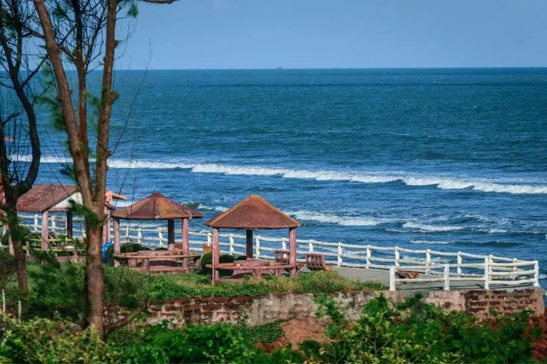
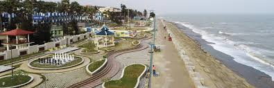
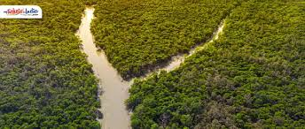

Darjeeling
Mahakal Temple, perched on Observatory Hill in Darjeeling, is a sacred and vibrant site that reflects the region’s spiritual harmony and deep-rooted faith. The name ‘Mahakal’ refers to Lord Shiva, the timeless force and destroyer of evil in Hinduism. This revered temple is unique in its fusion of Hindu and Buddhist traditions, where shrines of Shiva, Kali, and other deities stand peacefully beside Buddhist prayer flags and chortens, embodying Darjeeling’s essence of coexistence.
The origins of the Mahakal Temple date back to the 18th century, when a monastery known as Dorje Ling Gompa originally stood on the site. Over time, as local Hindu and Buddhist devotees gathered in growing numbers, the space evolved into a shared sanctuary. Surrounded by towering pine trees, the temple complex holds immense significance for both communities, with pilgrims offering flowers, incense, and spinning prayer wheels side by side.
One of the temple’s most eye-catching features is its vivid architecture — colorful shrines, statues, and prayer halls decorated with traditional designs. Though modest in size compared to South Indian temples, the energy and symbolism of Mahakal Temple are just as powerful, drawing visitors not only for religious purposes but also for its panoramic views of the Kanchenjunga range.

Mandarmani
Mandarmani, located on the eastern coast of West Bengal along the Bay of Bengal, is an unusual yet captivating coastal landform that blends serenity with ecological richness. Known for being one of India’s longest motorable beaches, Mandarmani is relatively untouched by heavy commercial tourism, making it a hidden gem for nature lovers and conservationists alike.
Stretching across several kilometres, the beach and its surrounding ecosystems form a dynamic natural belt of sand dunes, tidal wetlands, and estuarine creeks. Much like the knuckled peaks of Sri Lanka’s famed mountain range, the undulating dunes and curving coastline of Mandarmani create natural formations that appear to move and reshape with every tide, reflecting the powerful and ever-changing pulse of the sea.
The region serves as an important ecological zone, supporting a vibrant range of marine and coastal biodiversity. Despite accounting for only a small portion of the state’s geographical area, the Mandarmani coastal zone is home to numerous species of migratory birds, coastal flora, and marine life, including red crabs, which famously scurry across the sands by the thousands.

Kolkata
Rabindra Sarobar, nestled in the heart of South Kolkata, is a beloved and picturesque man-made lake that offers a tranquil escape from the city's vibrant hustle. Surrounded by tree-lined walkways and lush greenery, this iconic lake — often called the "Lungs of South Kolkata" — is not just a scenic attraction but also a vital ecological and recreational space for the city's residents.
Formed during the British era and now protected and maintained as a cultural and environmental landmark, Rabindra Sarobar is fed by underground springs and rainwater, creating a refreshing aquatic habitat that supports migratory birds, fish, and local flora. Adjacent to the lake are open-air amphitheatres, walking trails, meditation zones, and garden spaces that draw morning walkers, photographers, families, and nature lovers alike.
Much like Sembuwatta Lake’s connection to the surrounding community, Rabindra Sarobar is a lifeline for many Kolkatans — not for electricity, but for mental peace, physical wellness, and cultural engagement. The presence of dense groves of trees, flowering gardens, and reflective waters creates a perfect backdrop for picnics, yoga, birdwatching, and long, peaceful strolls.

Kalimpong
The charming Rishikhola Falls in Kalimpong are a mesmerizing sight, tucked away amidst the serene hills of the Eastern Himalayas. Located near the town of Rishikhola, the falls cascade gracefully down the rocky landscape, creating an enchanting blend of splashing water and tranquil surroundings. The falls are peaceful yet mighty, offering visitors a soothing retreat from the hustle of city life.
Two streams feed the falls, creating a divine soundscape of water rushing over the rocks. The upper fall, the more prominent one, invites visitors to rest by its natural beauty and listen to the calming sounds of the water. There is a small wooden bridge that stretches over the falls, offering a perfect vantage point to enjoy the view and capture stunning photographs. This picturesque spot has become a favorite among tourists who come to click the perfect shot, capturing the falls amidst the surrounding lush greenery.
While the falls provide a scenic paradise, Rishikhola Falls is not safe for swimming due to the strong currents and slippery rocks. The area is best enjoyed from a safe distance, where visitors can marvel at its beauty without risking safety. The falls are divided into two sections: the upper cascade, which drops from a height, and the lower pool, where the water gathers in a serene, rocky area — perfect for enjoying the sight of nature's raw beauty.

Digha
The serene and captivating Talsari Beach in Digha offers a tranquil escape amidst the gentle waters and sandy shores of the Bay of Bengal. Located a short drive from the bustling Digha town, Talsari is known for its untouched beauty, where the waves crash softly onto the golden sands, providing a perfect setting for relaxation and peaceful contemplation.
The beach is fed by the convergence of two rivers, creating a harmonious blend of saltwater and freshwater that enhances the soundscape of gentle waves lapping the shore. The main beach area, with its expansive view of the horizon, invites visitors to sit on the sand and immerse themselves in the calming rhythm of the waves. There is also a small wooden bridge stretching over a nearby river inlet, providing an excellent spot for photography, where the reflection of the sun on the water adds a picturesque touch to the landscape.
While Talsari Beach offers a serene retreat, it is important to note that swimming here requires caution, as the currents can be strong in certain areas. The area is best enjoyed from the safety of the shore or by taking leisurely walks along the coastline, where visitors can observe the natural beauty and enjoy the fresh air. The beach has different sections: the main sandy stretch, where the water gently laps, and the small tidal pools near the river, which are perfect for nature walks and quiet moments of reflection.

Sundarbans
The enchanting Sundarbans Delta, a UNESCO World Heritage site, is a mesmerizing natural wonder where the world's largest tidal halophytic mangrove forest meets the Bay of Bengal. Nestled amidst this vast water network and dense green canopies, the delta is home to unique waterways, serene rivers, and an astonishing blend of wildlife and aquatic life. The rivers flow gently through the landscape, their waters a blend of fresh and saltwater, creating an atmosphere of peace and mystique.
The waterways are fed by the mighty Ganges, Brahmaputra, and Meghna Rivers, creating a rich aquatic ecosystem where the sounds of the flowing rivers mix harmoniously with the calls of exotic birds and the distant hum of wildlife. The most prominent rivers in the Sundarbans, like the Pakhirala and Gobordhan rivers, create an enchanting sight where visitors can watch the serene flow of water surrounded by the dense green mangrove forests.
While the riverbanks offer tranquil beauty, it is important to note that the Sundarbans' waterways are not safe for swimming due to the swift tides and the presence of crocodiles and other wildlife. The region is best explored from a safe distance, where visitors can admire the pristine beauty and rich biodiversity without disturbing the natural balance. The rivers are divided into various branches, some shallow and calm, while others are deeper and surrounded by dense mangrove forests — offering a breathtaking spectacle of nature's resilience.